History of Budapest
Traces have been found of settlements dating back as far as the Old Stone Age.People lived on both sides of the Danube, where Budapest now stands, in the second millennium BC Bronze Age urn sites have also been uncovered. In the 6th C. BC Scythiansn from the Black Sea region settled here, and there are signs of Celto-Illyrian tribes having been here in the 4th/3rd C BC.
A decisive factor in the town's development was the building of a Roman fort in what is now Óbuda The Roman base of Aquincum, separated into civilian and military districts, was the capital of the province ofz Pannonia and flourished during the second half of the 2nd C BC.
In the 5th C A.D. the Huns swept across the country, and King Attila set up a great new kingdom in what is now Hungary. From the 6th to the 9th C the Avars settled where Budapest now stands. About 896 the Magyars led by Prince Árpád settled in the area of present-day Óbuda. Later on they migrated to the hills further west to take advantage of the greater protection they offered.
Around the year 1000 Stephen (István) I, King of Hungary, organized a feudal state on the Central European model and introduced Christianity. A few years later merchants from central and western Europe settled in Buda and Pest and helped both places to develop rapidly. In 1241-42 Mongols stormed the Danube towns of Buda and Pest. A few years later the construction of the Castle of Buda ordered by King Béla IV was completed. The royal court moved to Buda in 1347 again, when work was begun to expand the fortification into a palace in contemporary Gothic style. From then on Buda became a royal town, while Pest developed into a prosperous trading center. In the second half of the 15th C Matthias Corvinus extended the Royal Palace and Buda, together with Visegrád, became a center of Renaissance culture.
In 1526, after their victory at Mohács, the Turks took Buda and Pest. Under Sultan Süleyman I (the Magnificent) many churches were converted into mosques, fine bath-houses constructed and defensive works modernized. Buda became the seat of a Grand Vizier.
It was 1686 before Charles of Lorraine was able to reconquest Óbuda, Buda and Pest for the House of Habsburg. Various measures taken during the reign of Empress Maria Theresa led to a further economic upsurge in Buda and Pest, largely brought about by an influx of German-speaking settlers. In 1777 Buda was made a university town but lost this title to Pest a few years later. The left bank of the Danube soon became the intellectual and political center of the country. In 1848-49 there was a civil revolution led by liberal nobles.
Top 5 attractions in Budapest
1. Buda Castle & Castle Hill
Towering over the Danube, Budapest's Castle Hill (Várhegy) contains many of the city's most important medieval monuments and museums. Topping the list of these impressive structures is the 18th-century Buda Castle (Budavári Palota), a massive 200-room palace that replaced a 13th-century castle built to protect the stronghold from Mongol and Tartar attacks.
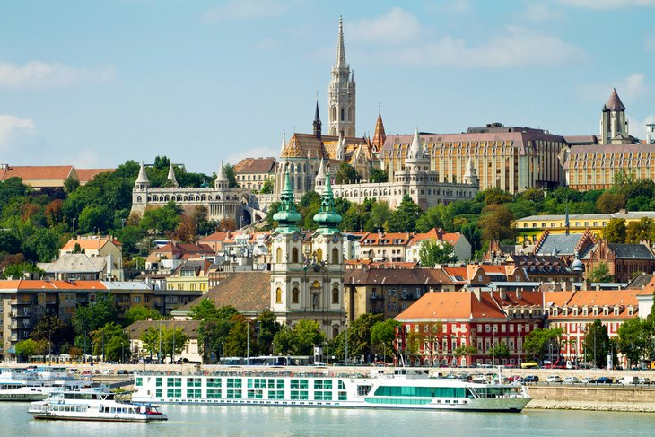2. Hungarian Parliament Building & Crown Jewels
A highlight of a walk around Budapest's lovely pedestrian-friendly cobbled streets is the area around the country's architecturally pleasing Parliament building (Országház), along with its neighbors, the Museum of Ethnography and the Ministry of Agriculture.
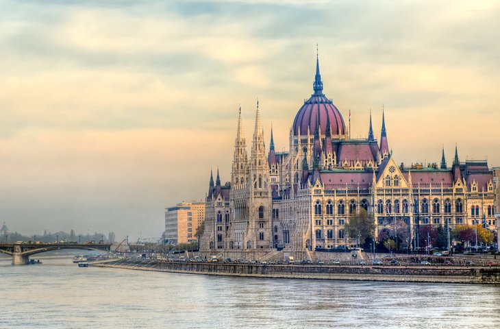3. St. Stephen's Basilica
The roof, towers, and external walls were badly damaged in World War II, and the church's precious mosaics fell from the walls. However, these were successfully restored to their original place and are the highlight of the richly decorated interior. The most impressive of these, the five-part Venetian mosaic is in the sanctuary and represents the allegories of the mass.
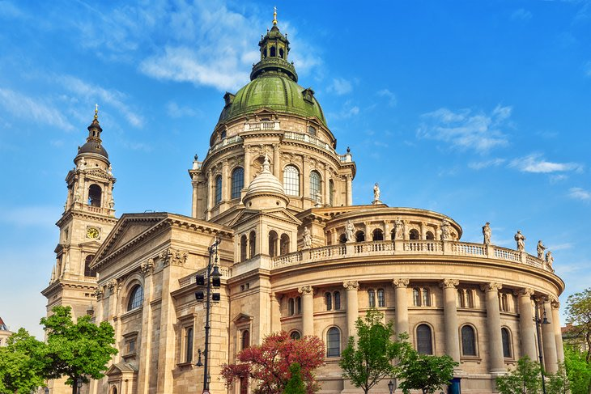4. Fisherman's Bastion
Overlooking the Danube, on the spot where the city's fishermen's guild built their defence walls in the Middle Ages, stands the impressive Fisherman's Bastion (Halászbástya).
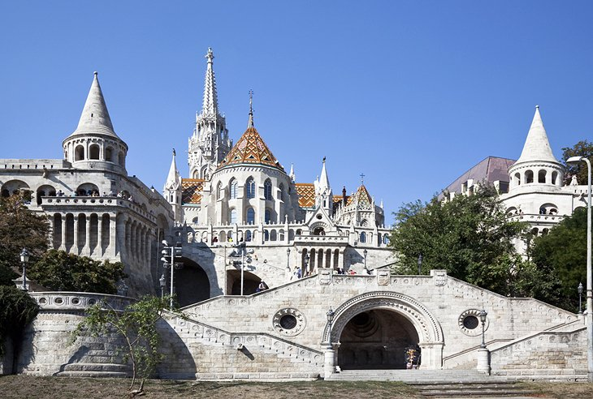
5. The Danube Promenade
The Danube (or "Duna" in Hungarian) flows through Budapest from north to south, and in some places within city boundaries is as much as 640 meters wide. One of the top free things to do in Budapest is strolling along the Danube Promenade (Dunakorzó), a pleasant century-old riverside walk that extends between the Elisabeth and Széchenyi Chain Bridges.
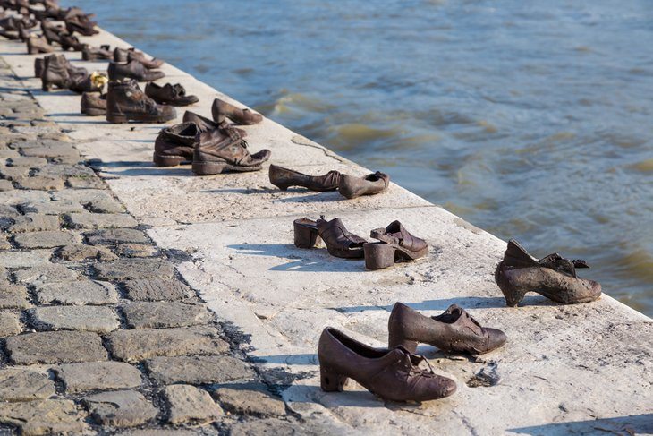10 Facts about Budapest
[1] Budapest was the result of the merger of three cities
Budapest became a city on November 17, 1873 when the three neighbouring cities of Pest, Buda and Óbuda united. The unification was
an extremely important historic event that lead to a rapid development of the city.However, finding a name for the new new capital
stirred a lot of controversy. Some of the names suggested included Hunvár, Etelvár, or Honderű. In the end Budapest won, becoming
thus the official name of the Hungarian capital.
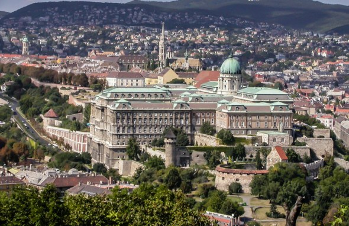
[2] No building in Budapest is taller than 96 meter
Budapest’s blend of old and modern makes the city an architectural delight. A look at Budapest’s downtown reveals that all buildings
stand at about the same height. All except for two: Szent Istvan Basilica and the Hungarian Parliament, which both measure exactly
96 meters.
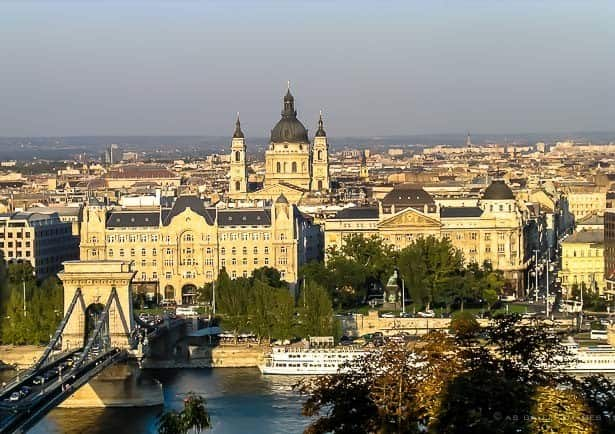
One of the most interesting facts about Budapest is that no building in the city can be taller than 96 meters. The number 96 represents
the year when the Magyars settled in the area (896). The fact that Szent Istvan Basilica and the Hungarian Parliament are the same
[3] Budapest has the largest synagogue in Europe
If you ever visited a synagogue you probably noticed they are generally quite simple and austere places of worship. But not the Great Synagogue in Budapest. This Jewish temple that stands tall and majestic on Dohány Street features one of the largest and most impressive cathedral naves that I have ever seen. It is one the most beautiful synagogues in all of Europe.
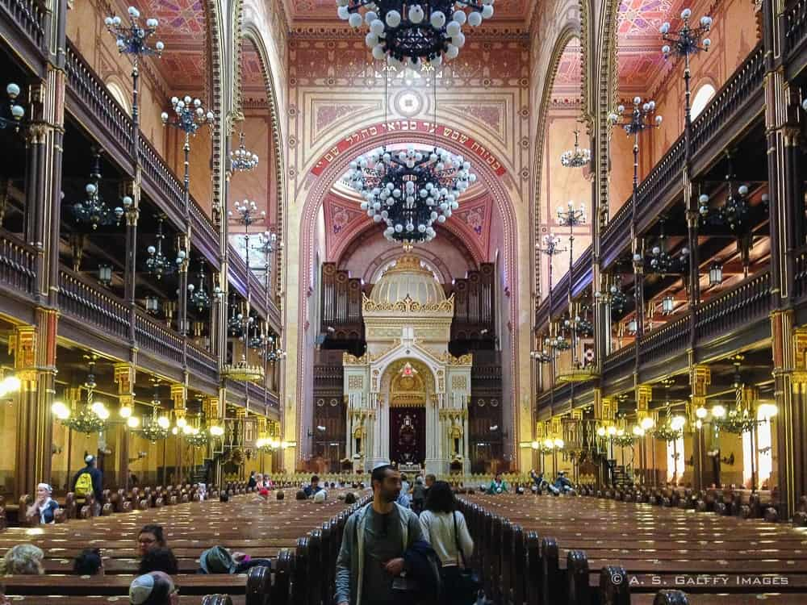
Erected between 1854 and 1859, the Great Jewish Synagogue seats 3000 people. It is the largest synagogue in Europe and the second largest one in the world (after Belz Great Synagogue, in Jerusalem).
[4] Budapest is home to the oldest metro line of continental Europe
Perhaps the least known fact about Budapest is that it’s home to the only metro system in the world that is a UNESCO Site. The Budapest Millennium Underground line opened in 1896, making it the second oldest metro line in Europe, after the London Underground.
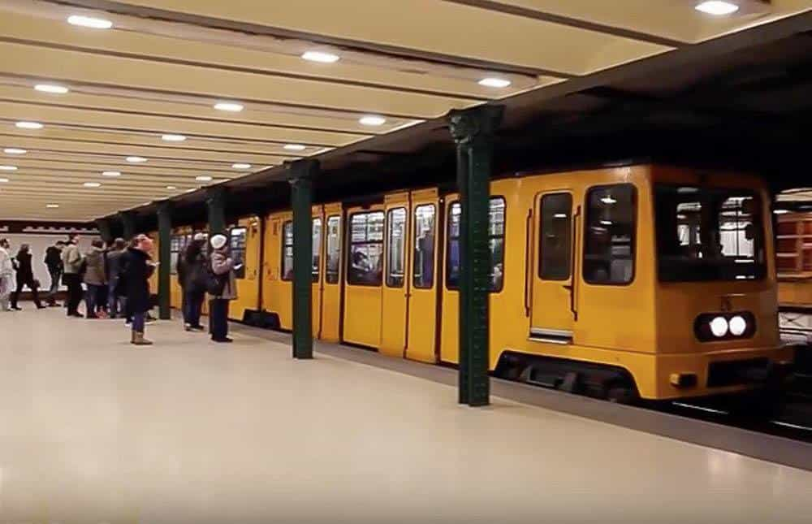
Why was it named the Millennium? Because in 1896 Hungary celebrated its 1000th anniversary, hence the name Millennium Underground. The line is still operational today (M1) connecting the Heroes’ Square and Vörösmarty Square.
[5] Budapest offers free public transportation for senior citizens for all EU citizens
Hungarian senior citizens as well as citizens of the European Union over the age of 65 can travel free of charge on Budapest public transport. When required by inspectors they have to present a personal identification card or document certifying their age and citizenship. The service includes buses, trolleybuses, trams, Metro and above-ground suburban trains. The funicular, chair-lifts and boat trips are not free.
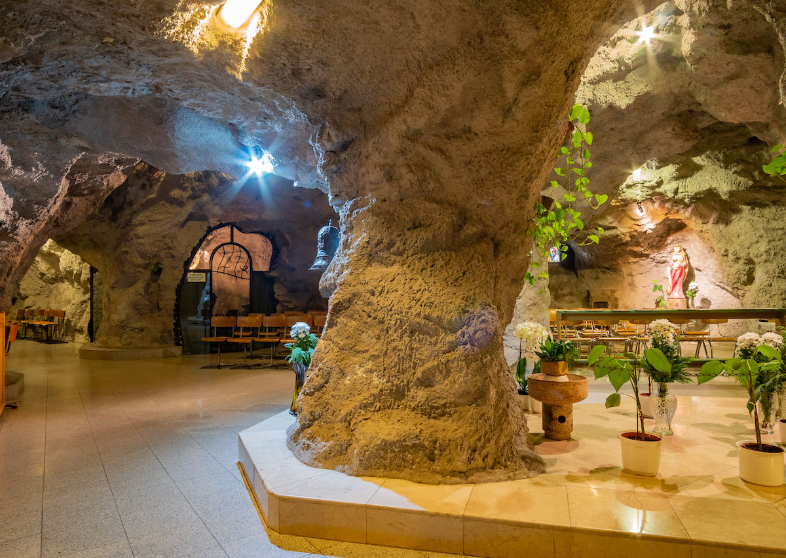[6] Budapest has a secret subterranean world
Beneath the city of Budapest lies a hidden subterranean world, a maze of over 200 caverns. The caverns are the result of the large number of geothermal springs in the area. Many of these caves are open to the public for guided spelunking adventures.The most< interesting one of the is the underground labyrinth located right beneath the Castle Hill, in Budapest Old Town. The 6-mile long Budavari Labirintus has a very tumultuous history.The underground labyrinth served as a shelter for prehistoric people, a cellar and a prison in medieval times, a military hospital during World War II, and a command post during the Cold War. In more recent times, the Labirintus became a museum that displays Budapest’s rich history. In 2011 the police raided the Labyrinth and subsequently closed it (for undisclosed reasons.) After it reopened, only a part of it was accessible for visitation. We were lucky enough to visit the entire Budavari Labirintus in 2004 (we too the photos above were taken during that visit).
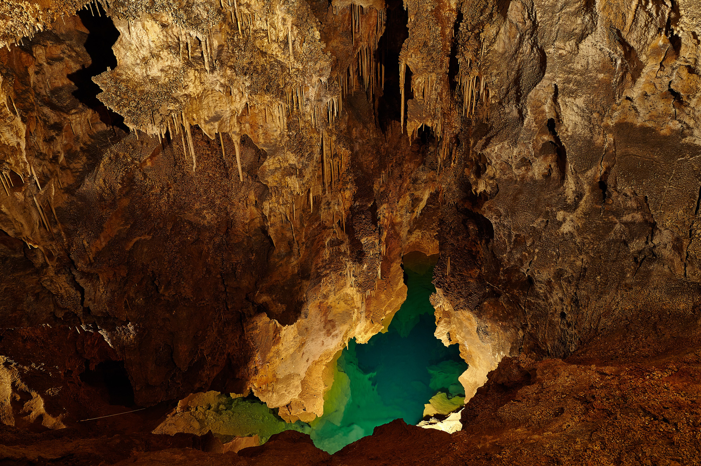[7] There is a statue in Budapest that can make you a great writer
The unique piece of art in Budapest’s City Park depicting a 13th century chronicler seems to have some miraculous powers. The legend has it that touching the pen of the Anonymus will bless you with great writing abilities. You may not believe in its magical powers, but the shiny surface of the pen suggests that many people still do.
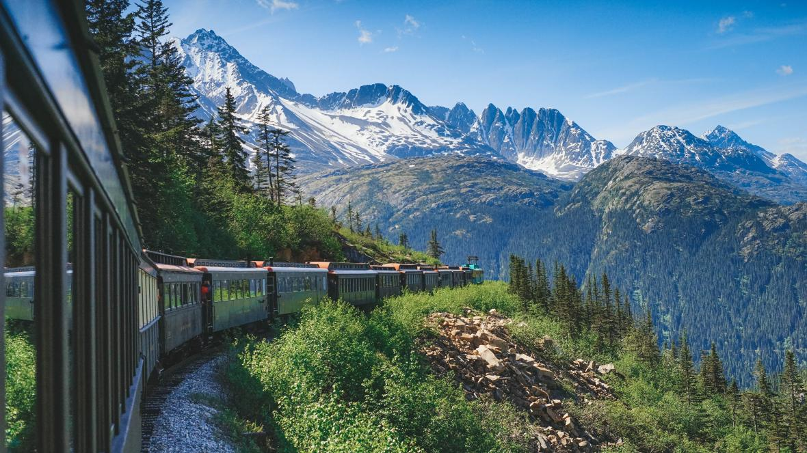
[8] Budapest has more thermal water springs than any other capital city in the world
Hungary has an incredible abundance of underground hot water sources. There is no surprise that people consider Budapest the thermal bath capital of the world. There are dozens of spas and baths in the Hungarian capital, some of which are in magnificent buildings, like Szechenyi, Gellert, or Kiraly Baths.
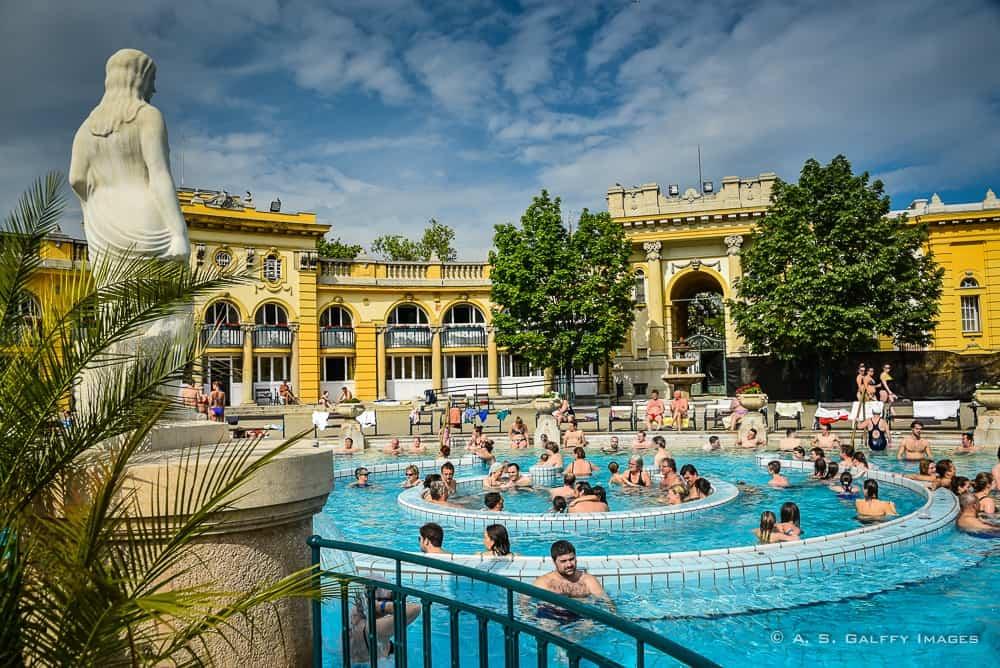[9] Budapest has a train run by children
Did you know that Budapest has a train that is run almost entirely by children? Not many visitors to Budapest know about this interesting fact. The Children’s Railway was started after World War II as a training ground for communist kids after a model introduced in the former Soviet Union in the 1940’s. Children between the ages of 10 and 14 can complete a four-month training course to become train conductors, workers and inspectors,on this 11 km railway. Except for the station master and the train < drivers who are adults, all the other jobs are performed by children.
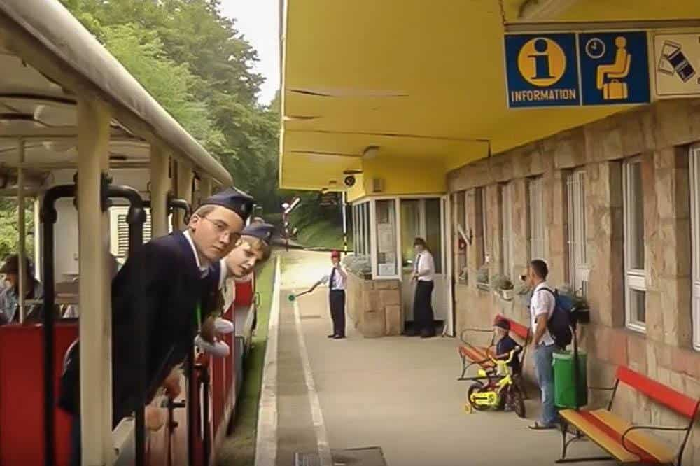
[10] There is a cave church in Budapest
Few of the visitors of Budapest know of the little church in the rock under the Gellert Hill, in Budapest Old Town. Truth is that
Sziklatemplom (‘Rock Church’) enjoys very little fame, being surrounded by so many grandiose churches. If you happen to be at the
Liberty Bridge (the green metal one), you can take a look at this strange chapel founded by a group of Pauline monks in 1926.
The Cave Church (which is still in use) is not spectacular, but it has its own charm. Definitely off the beaten path, but worth
a 30 minutes detour.
1. Fisherman’s Bastion
What is it? Built between 1895 and 1902 to celebrate the thousandth birthday of the Hungarian state, the Fisherman’s Bastion is an
impressive neo-Gothic viewing terrace situated on the Buda bank of the Danube, on Castle Hill.
Why go? For unforgettable views in a fairy-tale setting, there’s nowhere better. Climb one of the ornate turrets and peep at boats
bobbing lazily down the Danube, then pop into one of the city’s most famous patisseries, the 200-year-old Ruszwurm Confectionery,
while you’re up there.
2. Szechenyi Spa Baths
What is it? By day, the Szechenyi Baths are an oasis of calm in bustling Budapest, with luxury spa treatments, saunas, and massages in the grandeur of a sprawling 20th-century Turkish building. But on a weekend night? Well, it turns into something altogether more debauched: the Sparty.Why go? If you want to be pampered and preened, head to Szechenyi during the day. If it’s a wet and wild night you’re after, wait until night falls for the Sparties. The brainchild of a famed Hungarian party producer, these night-time raves offer unlimited alcohol, live electronic music, and an anything-goes atmosphere in the water. The choice is yours.
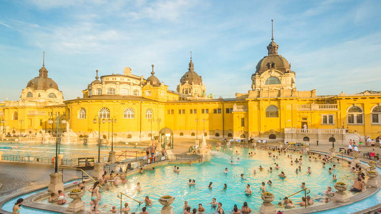
3. Langosh
What is it? Lángos is a traditional Hungarian snack and a deep-fried, disc-shaped bread, usually slathered in cream cheese and garlic, bolognese sauce or herbs and salt. It’s best sourced from a side-street vendor on a hangover, or from the downtown party vortex of Gozsdu Courtyard, where take-out spot Langosh serves nothing but the doughy delicacy in all its tantalising varieties until the early hours.
Why go? If you’ve got a soft spot for fried bread and cheese – who doesn’t?! – then we bet just one of these traditional Hungarian snacks won’t be enough. You’ll be straight back in for round two.

4. Great Market Hall
What is it? The Great Market Hall is a restored neo-Gothic tunnel where you can pick up the best local produce and handicrafts.
Why go? For the superb architecture and a total sensory overload, or to source some one-of-a-kind souvenirs and sample unfamiliar Hungarian delicacies. From pickles and fresh veg to meat, seafood and more, we’re feeling hungry just thinking about it.
< 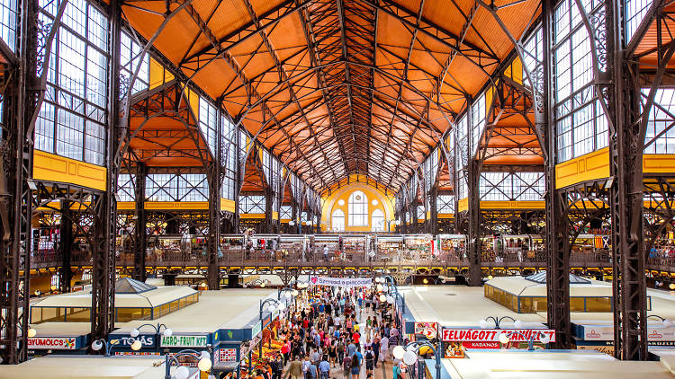5. The Chain Bridge
What is it? Opened in 1849, Budapest’s magnificent suspension bridge connects the Buda (West) and Pest (Eastern) sides of the city, arching
over the River Danube. Designed by an English engineer and built by a Scot, the bridge is a symbol of national pride and economic advancement.
Why go? It’s historically important, architecturally impressive and only takes around 15 minutes to stroll across, so you can marvel at the views stretching for miles on both sides of the river and get some superb photographs. It also looks fantastic at night when it’s all lit up
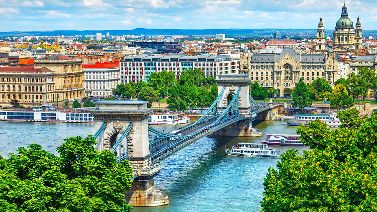Top 5 resturants in Budapest
1. Mazel Tov
What is it? A spacious glass-roof restaurant that serves a moreish hybrid of Israeli-Mediterranean food and totally on-point cocktails.
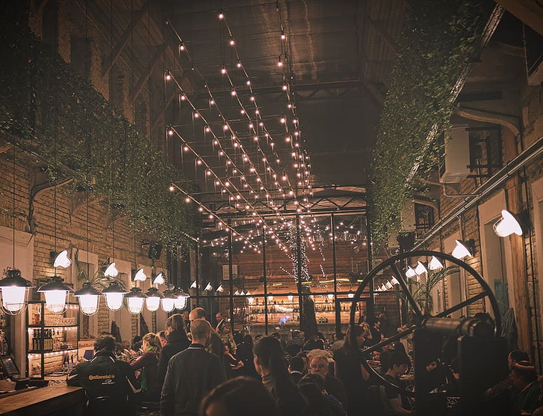. Menza
What is it? A kitsch café with a modern menu and a few unusual twists.
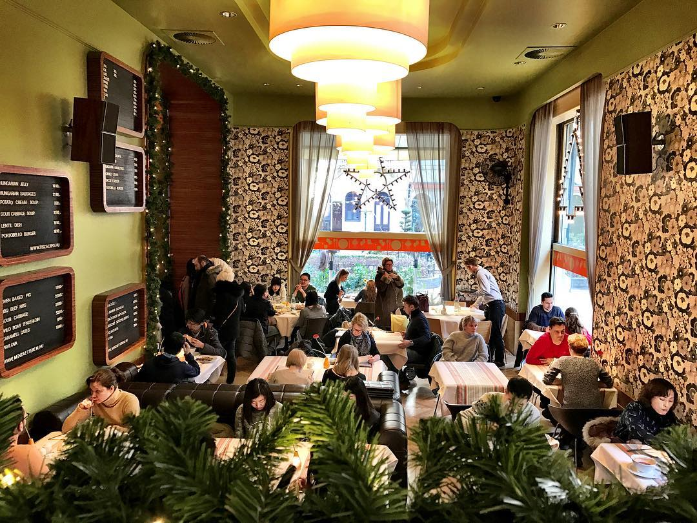3. Borkonyha
What is it? A Michelin-starred restaurant with meat-laden dishes and more than 200 wines.
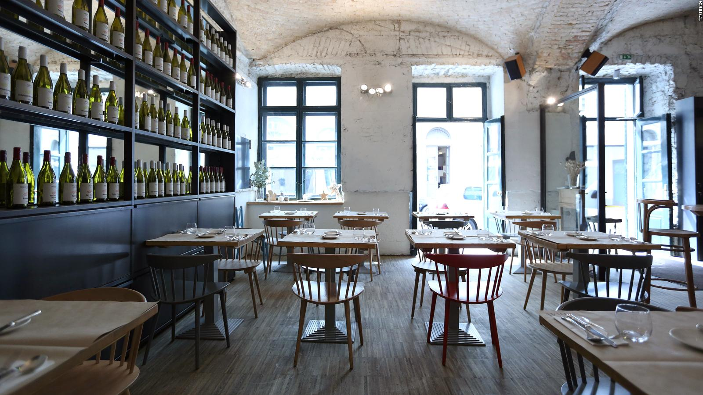4. Rosenstein
What is it? An award-winning, family-run hole-in-the-wall.
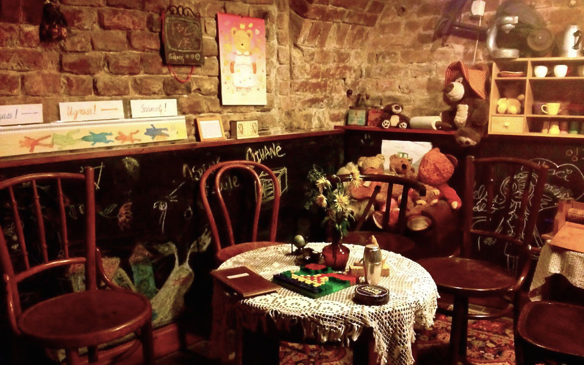5. Café Kor
What is it? A popular all-day spot with impeccable service and typical Hungarian dishes.
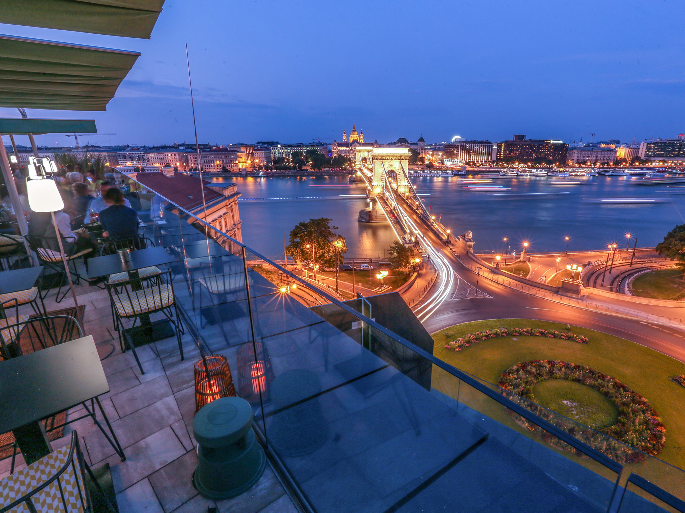